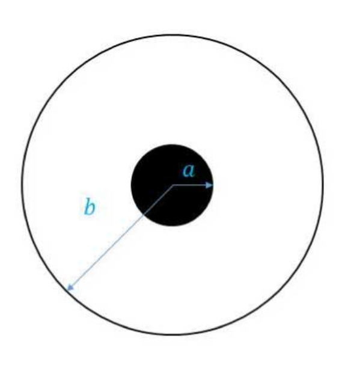
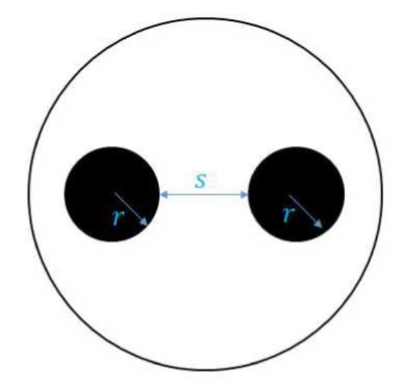

Time-domain reflectometry¶

The properties of waveforms travelling through cables with different characteristic impedances are investigated. The behaviour of reflected waves from boundaries of high, low, and matched impedance is observed and related to the wave equation, and the characteristic impedance and speed of pulses in a cable are used to compare the cable inductance and capacitance to theoretically calculated values.
Introduction¶
Objectives¶
- To observe and record the waveforms associated with reflections off of barriers with varying characteristic impedances.
- To study the effect of matched impedance on pulse reflections.
- To compare the characteristic inductance and capacitance of the cables derived from measurements of the pulse speed and impedance to the theoretically predicted values.
Equipment¶
Signal generator, oscilloscope (digital or analogue), potentiometer (three-terminal voltage divider), coaxial cable, twisted pair wire, multimeter, and leads with connectors to allow for short and open circuit terminations. The lengths of the cables is written on the cable spools (between 40 and 300 m) and may be assumed to be accurate to m; the characteristic impedance of the coaxial cable can be obtained from the cable specifications, and the impedances of the oscilloscope and signal generator will be found on the equipment or in the relevant manuals.
Principal Data Taken¶
- Graph or photograph of the incident and any reflected pulses for both the short circuit and open circuit cases, for the coaxial cable and the twisted pair wire.
- Velocity of the pulses in both test cables.
- Characteristic impedance Z of the twisted pair wire and coaxial cable.
Things to Watch Out For¶
- The TDR setups on different benches have slightly different coaxial cables and twisted pair test wires, which may have very different characteristic impedances, lengths, and physical constructions (e.g., a single pair of conductors vs. a double pair in parallel). Make sure you include the labels of the cables used in your report. Check with your demonstrator to see if the cables you are using have the properties you think they do
- There may be multiple reflected pulses in the system, some with very low amplitudes; search the oscilloscope trace carefully and relate observed features to physical boundaries in the system to make sure you understand the paths the signal may be taking.
Theoretical Background¶
An electromagnetic signal in a wire is a form of wave, with its propagation speed and dispersive properties determined by the medium in which the wave travels. For a wire, these properties are typically summarised by a few related measurable properties: the characteristic impedance Z, the inductance per unit length () and the capacitance per unit length (); these are determined by the geometry and dielectric properties of the wire and any associated shielding.
In general when a signal crosses from one wire to another, or encounters a junction, device, or break in the wire, a reflected pulse is generated because the signal "sees" the change in medium as an increase or decrease in . In the ideal case, when no energy is lost to dissipative effects, the expression relating the incident and reflected pulse voltage is
where and are the incident and reflected voltages respectively, and is the load impedance (impedance of the barrier, device or new wire). Clearly the voltage of the reflected pulse can be very high, near zero, or even negative, depending on the relationship between and . The above equation can be transformed into the equivalent equation for the current using Ohm's law. Similar expressions can be obtained for any wave, for example acoustic waves in the Earth encountering different rock layers, or ocean waves travelling across the boundary of the continental shelf.
A transmission line with two conductors like a coaxial or twisted pair cable can be modelled in circuit theory as a long "ladder" formed by two wires with some series inductive impedance per unit length along the two wires and some parallel capacitive impedance per unit length across the "rungs" of the ladder. This formulation leads to a description of the change in voltage and current with distance along the transmission line ( and ), the solution of which yields a wave equation in (and in ).
For a single wave solution in one direction, the solution of the wave equation with the characteristic impedance eventually gives:
In a lossless transmission line whose length is much shorter than the wavelength of the signal, the inductance per unit length can be determined from the definition of inductive reactance and the relationship between frequency, wavelength and wave velocity 1. For the purposes of this lab, the result of greatest interest is:
The above equations can be combined to derive a similar expression relating to and and thus it is possible to determine C and L from measurements of the pulse and .
and are ultimately determined by the construction of the transmission line. A coaxial cable consists a solid conducting cylinder separated from a hollow cylindrical conductor by a dielectric material as shown in Figure~\ref{fig:coaxial}. For inner and outer radii and respectively, the properties of the cable are given by:
where is the dielectric constant of the insulator and and are the permittivity and permeability of free space, with their usual values.
Because the twisted-pair wire has a different geometry, the transmission properties are quite different, and are given by
In this case the two wires have radius and are separated by a fixed thickness of insulating material, as seen in Figure~\ref{fig:twisted}. is the inverse hyperbolic cosine function, which may not be available on a typical hand calculator but is defined in most spreadsheet programs and mathematical packages such as Mathematica or Matlab. In transmission lines comprising multiple pairs in parallel, the formula must be modified using the rules for combining impedances in parallel. This may become important depending on which twisted-pair wire you are using\footnote{The burglar alarm wire comprises two pairs of twisted strands, which are combined in parallel by the connectors at the cable ends. In Figure~\ref{fig:twisted}, imagine a second pair oriented 90 away from from the wires shown.}.
\noindent\begin{minipage}{0.48\textwidth}
Cable cross-sections


Procedure¶
Start by connecting the signal generator to the oscilloscope through the T-junction. You will test two types of transmission lines by connecting them to the other side of the T-junction: first a twisted-pair wire (at one of the benches this is a telephone wire, and on the other it is a burglar alarm wire), and then a coaxial cable . Both the coaxial and twisted-pair lines have been prepared with connectors on the end so that you can easily use them in the short circuit (low terminating impedance) and open circuit (high terminating impedance) conditions.
Set the signal generator to a single pulse of narrow width. The required cycle time will depend on the cable length. Set up the signal generator and the oscilloscope so that you can see just a few of the pulses on the screen. The first of these will be the generated pulse. When you have the time baseline correctly adjusted, the other pulses will be reflected ones. Ask your demonstrator for assistance if you are having trouble setting up the apparatus or observing the pulses.
\begin{enumerate}
- Examine the waveforms on the twisted-pair line in both the short circuit (ends of the leads connected) and open circuit (ends disconnected) conditions. Try to associate each feature in the diagram with a physical interaction between the pulse and a component of the apparatus. Sketch or photograph the pulses and label them accordingly. In some cases there may be multiple pulses observed; search carefully for low-amplitude features, and think carefully about their origin. Note that the -axis of your graph should have the coordinates of time (microseconds s or nanoseconds ns). In your report, explain qualitatively why the series of pulses decreases in amplitude, as well as the reason for the polarity of every pulse observed.
- Calculate the speed of the pulses along the line by comparing the time coordinates of the initial and reflected pulses. Express this answer both in m~s and as a fraction of the speed of light. Think carefully about the sources of uncertainty that creep into your result, and include these factors in your reported error.
- Connect the potentiometer to the end of the wire to use it as a variable impedance termination. Find the characteristic impedance Z of the twisted-pair wire in accordance with Equation~\ref{eqn:vrefl} as follows: change Z by turning the dial on the potentiometer. When the amplitude of the reflected pulse drops to zero, the impedance of the potentiometer is matched to the line impedance. Z can be measured with a multimeter. In your report, explain carefully how you determined the condition of minimal reflection and how you determined the uncertainty in your estimate of Z.
- Repeat the experiment using the coaxial cable (omitting the determination of Z since the coaxial cable is well-standardised at Z = 50~). Describe any differences in the oscilloscope trace between the twisted-pair and the coaxial cases, and account for them referring to Equation~\ref{eqn:vrefl} and the impedances of the signal generator and oscilloscope. \end{enumerate}
Calculations¶
You have experimentally measured the pulse velocity and the characteristic impedance Z for two types of transmission line. With these data you can calculate the inductance and capacitance per unit length of the lines, and compare those to the theoretical predictions for the two types of line. In this experiment, the length of the transmission line is known and the reflectometry is used to determine the pulse velocity, but in a real field situation we may have the opposite case, in which the velocity is known. In this case the pulse timing can tell you the distance between the signal generator and a change in impedance such as a break in the line (as well as the nature of the break in the line).
Do the following calculations for both cables tested:
\begin{enumerate} 1. Use and Z to find L and C for the transmission line (Equations~\ref{eqn:zchar} and \ref{eqn:lchar}). It may be useful to remember that the units for L and C are henries per metre (Hm) and farads per metre (Fm), respectively. The SI unit prefixes for 10, 10, and 10 are pico-, nano-, and micro-, respectively.
- Using the cable specifications, look up the characteristic impedence of the coaxial cable. Does the value agree with your measurement? Consider the formulae for theoretical calculation of L and C (Equations~\ref{eqn:coaxial}--\ref{eqn:twisted2}). Using the appropriate values for the two wires, find the expected L and C of both transmission lines. Do your empirically determined values agree with the theory? If not, discuss some possible reasons for the disagreement. The transmission line properties for some of the cables are as follows. {\bf Don't forget to specify in the report labels of the cables used.}
\end{enumerate}
Bonus Section¶
For a couple of extra marks, derive Equations~\ref{eqn:twisted1} and \ref{eqn:twisted2} using the definitions of capacitance and inductance together with the geometry in Figure~\ref{fig:twisted}. \vspace{18pt}
\noindent{\bf References}\ \noindent Dickey, J. 2018, {\it Lecture Notes for KYA211/374}, available on MyLO\ \noindent Pain, H.J. 2005, {\it The Physics of Vibrations and Waves, 6th Ed.}, (Wiley: London)\ \noindent Terman, F. 1955, {\it Electronic and Radio Engineering, 4th Ed.}, (McGraw-Hill: New York)
-
C. J. Adkins, Electronic and Radio Engineering, 4th Ed., (McGraw-Hill, New York, 1955), Ch. 4. ↩